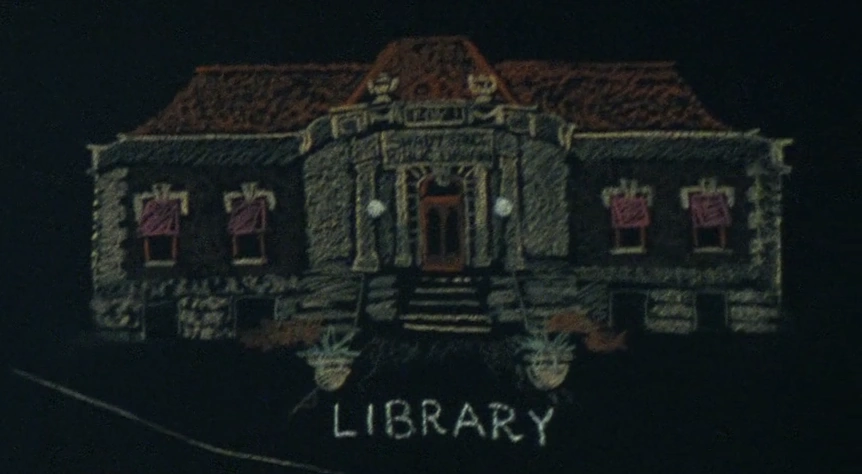

シェイディ・サンズ公共図書館
TVシリーズ ロケーション
LOCATION DATA

{{PAGENAME}} is a Shady Sands building mentioned {{in|FOTV}}.
Background
A public library used to store books and serve the denizens of NCR's capital city. Fondly remembered by survivors of the Fall of Shady Sands.Appearances
The schools appears {{In|FOTV}} episodes "The Past".Gallery
References
{{References}}Category:Fallout TV series locations Category:Shady Sands
Impression
（準備中）
（準備中）